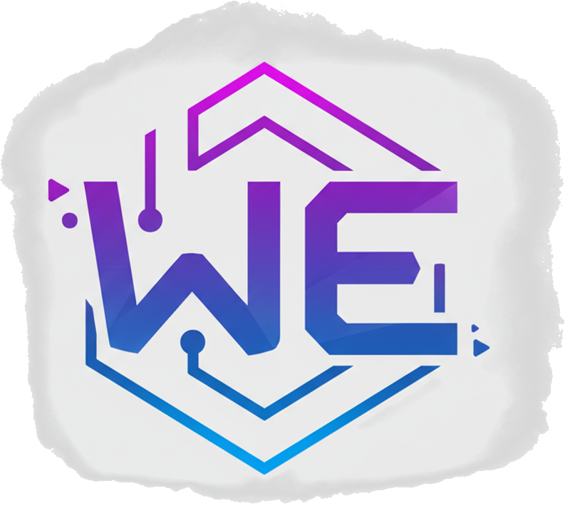

Bridge Connection
Disconnected
This tool requires a local Node.js bridge application running on your computer.
1. Select a Project
2. Generate Executable
Selected Project:

Package your web projects into desktop applications.
This tool requires a local Node.js bridge application running on your computer.
Selected Project: